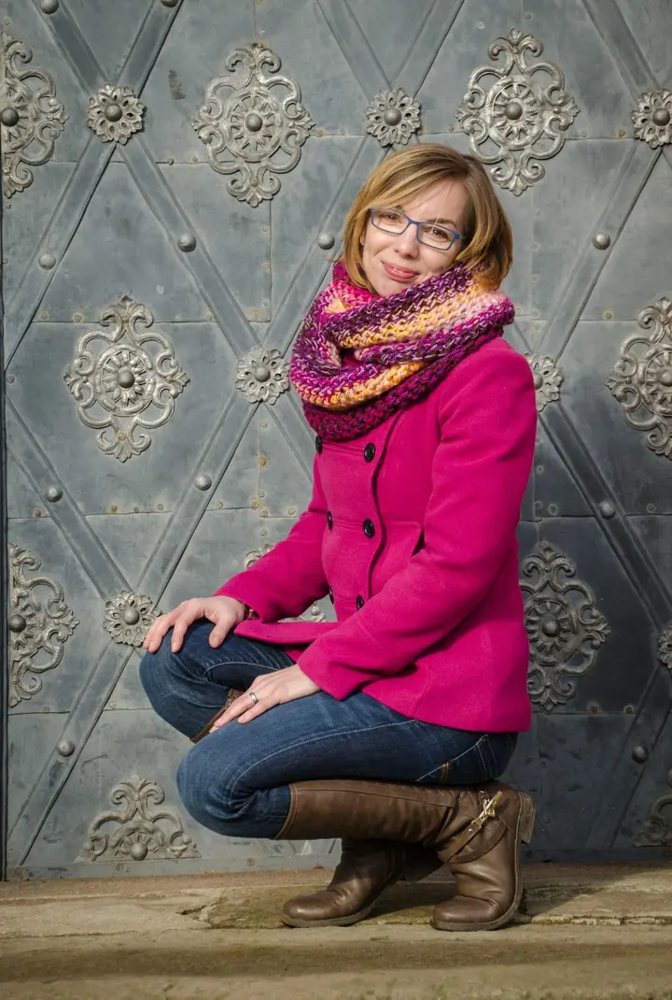
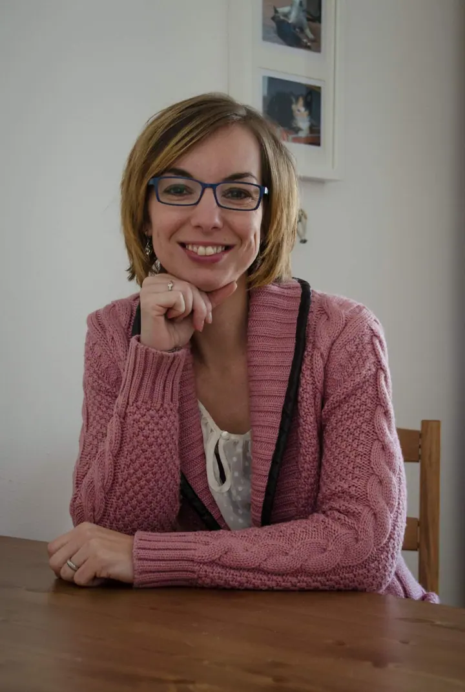
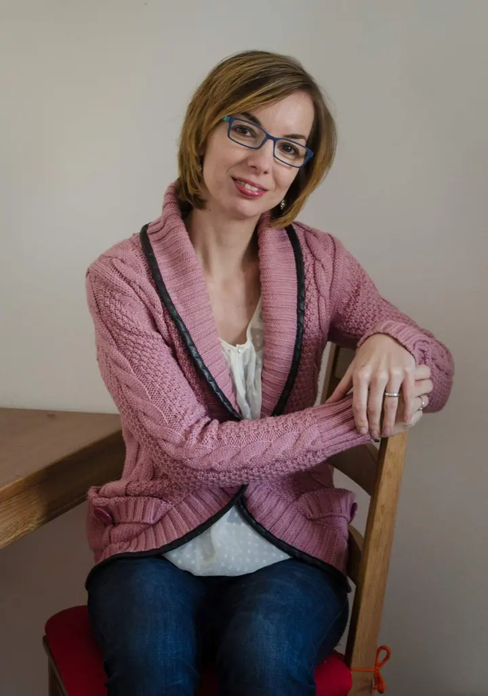
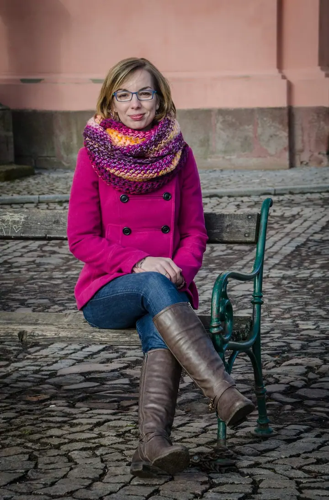
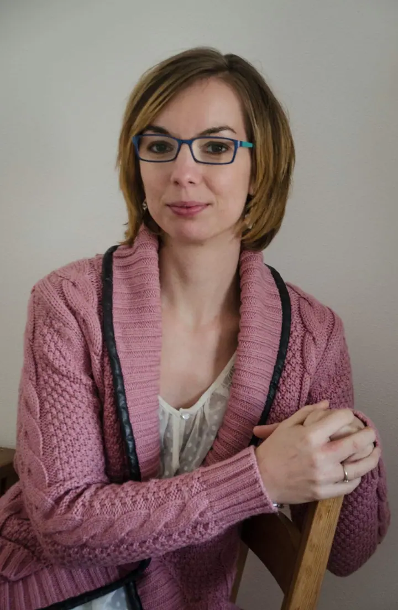
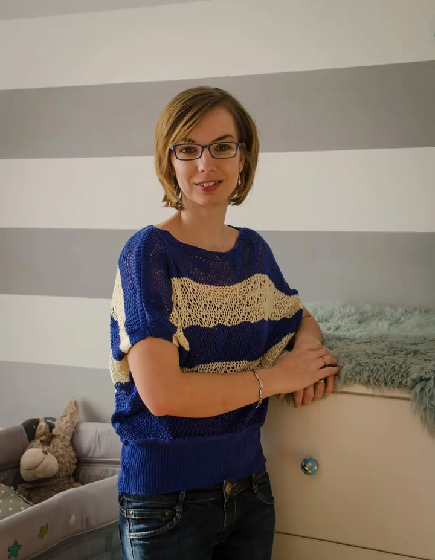
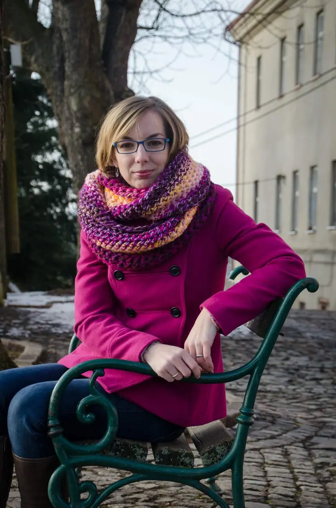
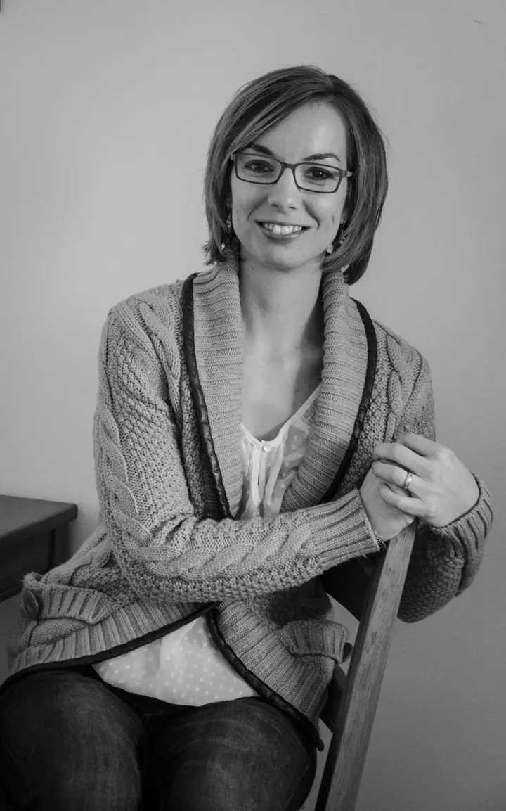

01 / 04
Portréty
Portrétní focení doma, v interiéru nebo venku v ulicích a parku. Barevně i černobíle, v klidu a bez spěchu.
Zeptat se na termín→







Portréty, zvířata i rodina. Fotím srdcem.
Zeptat se na termín →(01) Ahoj
Jmenuji se Kristýna Blažková a fotím na zakázku portréty , rodiny, miminka i koně a jiná zvířata. Ráda vás vyfotím doma u stolu stejně jako venku na lavičce v parku . Fotím srdcem a fotím ráda.
(02) Co fotím
01 / 04
Portrétní focení doma, v interiéru nebo venku v ulicích a parku. Barevně i černobíle, v klidu a bez spěchu.
Zeptat se na termín→Dále nabízím
Fotím koně a další zvířata na zakázku. Pro mě je to srdeční záležitost.
↗Rodinné fotky a focení miminek, ke kterým se budete rádi vracet.
↗Nafotím vaši svatbu, oslavu, firemní akci nebo slavnost. Po domluvě nafotím cokoli.
↗(04) Postup
Od první zprávy po hotovou galerii.
Krok 1 z 4
Pošlete mi e-mail, co byste chtěli nafotit, a pár slov o sobě nebo o vaší akci.
Krok 2 z 4
Společně vybereme termín, místo a podobu focení, ať doma, venku nebo přímo na akci.
Krok 3 z 4
Fotíme v klidu a bez spěchu. U zvířat i dětí počkám na chvíli, kdy jsou sami sebou.
Krok 4 z 4
Fotky pečlivě vyberu a upravím, barevně i černobíle, a pošlu vám je.
Fotím srdcem, fotím ráda.
(05) Za objektivem
Jmenuji se Kristýna Blažková a focení je pro mě srdeční záležitost. Proto se moje tvorba jmenuje Fotím srdcem, fotím ráda. Nejbližší jsou mi koně a zvířata vůbec, ale stejně ráda fotím lidi.
Nabízím focení na zakázku: portréty, rodinné fotky, miminka, svatby, oslavy, akce i slavnosti. Fotím doma, v interiéru i venku, barevně i černobíle, podle toho, co se k vám a k místu hodí.
Nemáte své téma v seznamu? Napište mi. Po domluvě nafotím cokoli a společně vymyslíme, jak na to.
Kristýna
Kristýna Blažková · Fotografka portrétů, zvířat a rodin
Koně a jiná zvířata, portréty, rodinné fotky, miminka, svatby, oslavy, akce a slavnosti. Po domluvě nafotím cokoli.
Ano, zvířata a hlavně koně jsou mi nejbližší. Ráda vyfotím vašeho koně, psa i jiné zvíře, samotné nebo s vámi.
Fotit můžeme u vás doma, venku v parku nebo ve městě, případně přímo na místě vaší akce. Místo vždy domluvíme předem.
Samozřejmě. Pokud je budete dál publikovat, prosím jen o připsání mého jména nebo odkazu na moje stránky.
(07) Kontakt
Napište pár vět o tom, co si představujete, a termín, který se vám hodí.
blazkovakristyna@centrum.cz